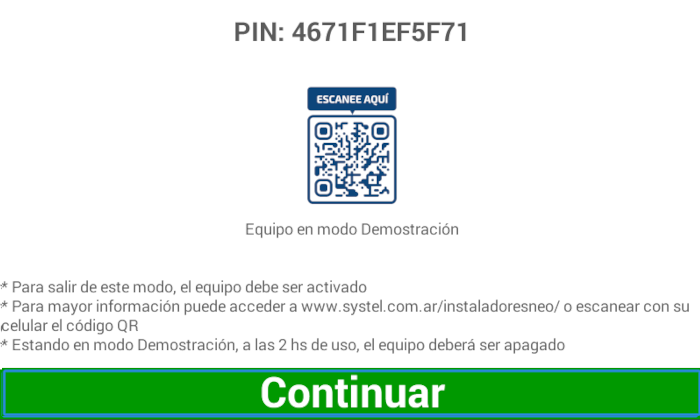
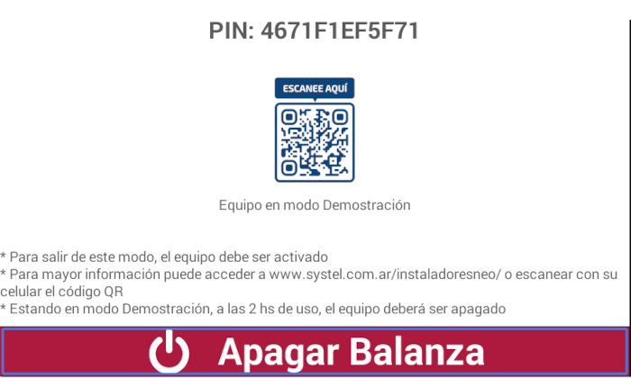

Activación
Activación
La pantalla de activación será exhibida a cada inicio de la balanza, hasta que sea realizado el proceso de activación. Para realizar la activación, debe llamar a un Instalador Autorizado Systel, el cual puede consultar en la página oficial para ayudarlo a realizar la tarea y acompañarlo en la primera experiencia con su balanza Cuora Neo Systel.

Presione el botón continuar para cerrar la pantalla.
En este modo, la balanza estará 100% operacional por 2 horas. Después de este tiempo, un mensaje aparecerá, indicando que apague la balanza.

Presione el botón de apagar balanza.